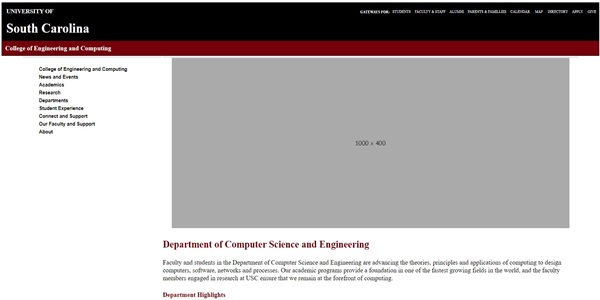

Assignment 1 - Basic HTML

A website about my experiences with using Unity. I used the first few basic fundamentals of HTML to create this website.
Assignment 2 - Basic CSS

A website I created about my tuxedo cat. This website includes a navigational links and tabs, photos, and a get-to-know-me table.
Assignment 3 - Page Layout

While utilzing the HTML elements, I created a webpage replicating a layout that was provided in the instructions.
Assignment 5 - Recreate CSS Page
This is my attempt of a recreation of the Computing and Engineering page on the University of South Carolina's website.
Assignment 7 - JavaScript, Buttons, Functions, and more.
The first javascript webpage that I've created! There is a changeable image through clicking, a slider rotate that spins the image, and a star playground!
Assignment 8 - Conditionals
This assignment is a display of my first time creating a javascript toggle menu, switch picture on key press and switching picture on a slider.
Assignment 9 - For Loops
This assignment was based on creating a bounching soccer ball without the use of CSS animation and a 'for loop' for the specific description to show when the designed image is clicked on.
Assignment 10 - Arrays
For this assignment, we created a webpage that included the use of arrays in javascript. Our goal was to create an ad banner and add in images and their attributions!
Assignment 11 - Classes
For this assignment, we created a webpage on a topic to store corresponding information about them in an array of classes.
Assignment 12 - Parsing JSON
For this assignment, I learned how to parse a JSON file and display the contents within it!
Projects
Project 1 - Topic Selection

A PDF document of the name and purpose of my project. In this project, I will be building a website to showcase the skills that I have learned in this course.
Project 2 - WireFrames

A MockITT wireframe of the professional portfolio I will be creating for my project. This will be a black and white wireframe for the sole purpose of focusing mainly on structure.
Project 3 - HTML and CSS

A implementation of every page of my portfolio wire-frames in HTML and CSS.
Project 4 - Colors, Pictures, and Text
In this part, I added a spring color theme, icons, and descriptions.